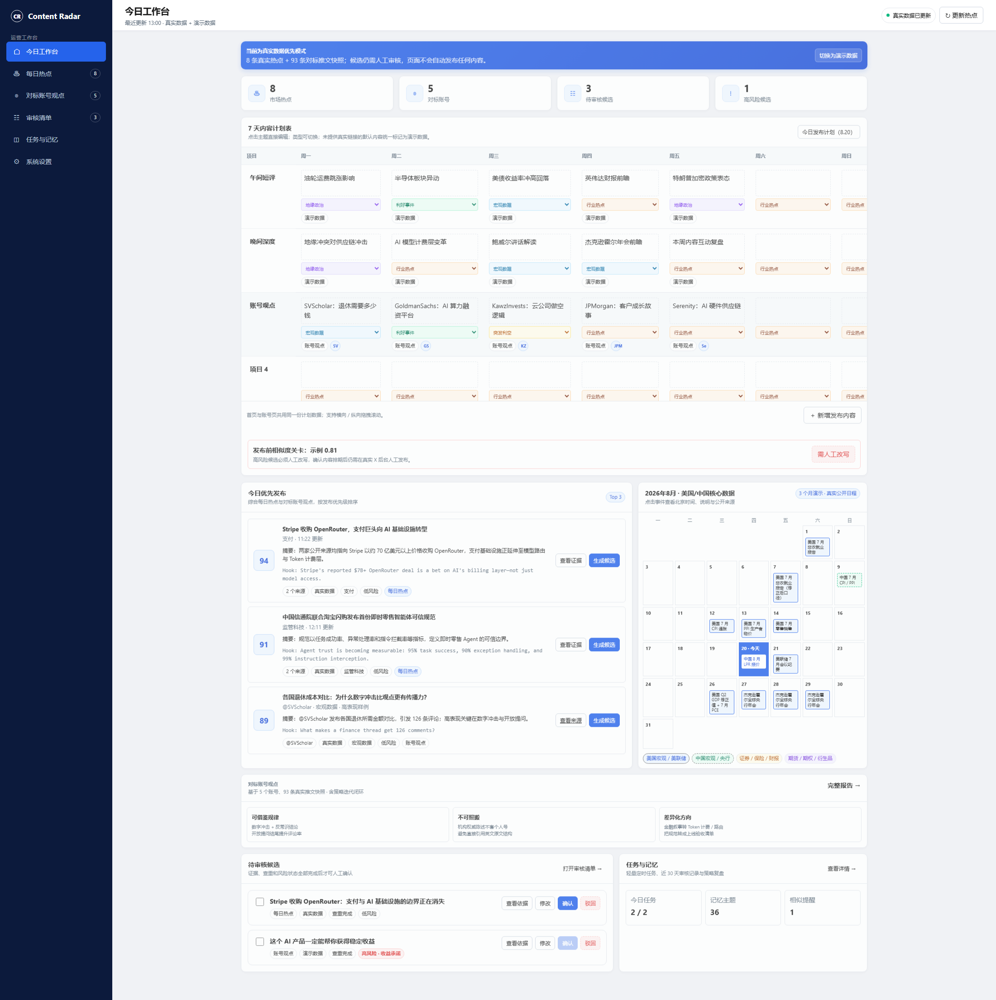
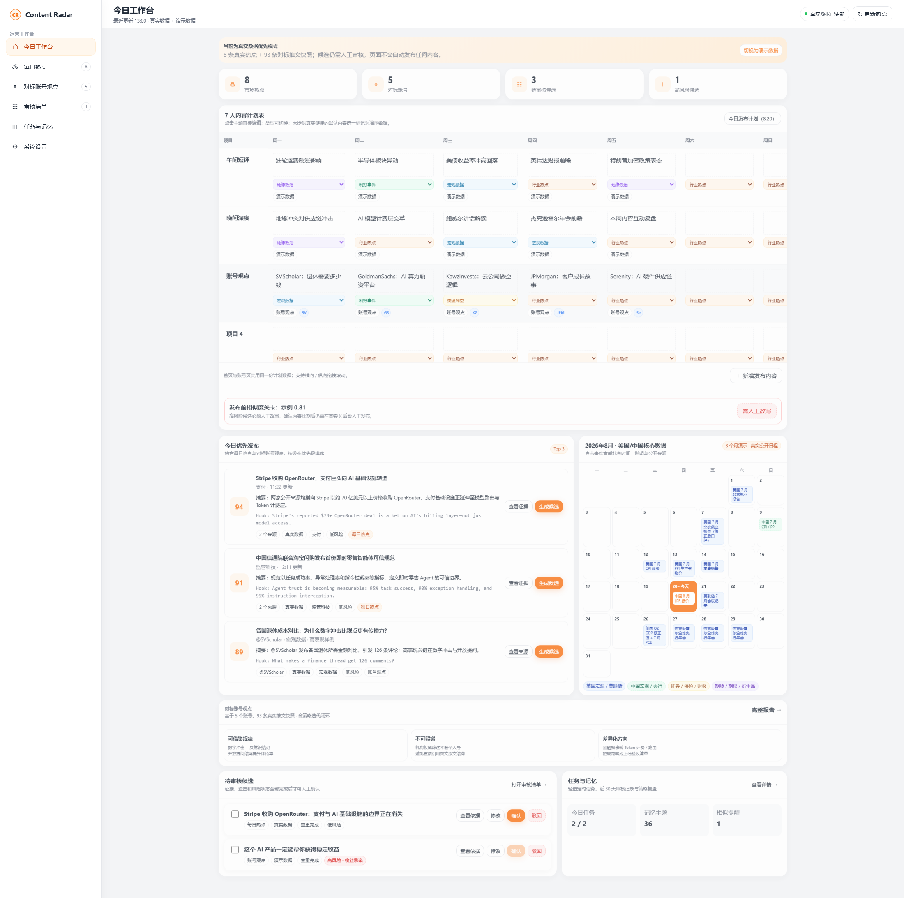

8
市场热点
最近更新 13:00 · 真实数据 + 演示数据
点击主题直接编辑；类型可切换；未提供真实链接的默认内容统一标记为演示数据。
| 项目 | 周一 | 周二 | 周三 | 周四 | 周五 | 周六 | 周日 | 操作 |
|---|
高风险候选必须人工改写，确认内容排期后仍需在真实 X 后台人工发布。
综合每日热点与对标账号观点，按发布优先级排序
点击事件查看北京时间、说明与公开来源
证据、查重和风险状态全部完成后才可人工确认
轻量定时任务、近 30 天审核记录与策略复盘
回答“今天值得写什么”，每条事件均保留公开来源和评分依据。
真实数据 8 条 · 来源：新浪财经 / 华尔街见闻 / 东方财富 / 腾讯新闻 · 更新于 2026-08-20 15:00
去重规则：主体 + 事件类型 + 24h 时间窗指纹，跨源相似度 ≥ 0.70 合并。 优先级公式：时效 30% + 影响 25% + 定位相关性 30% + 传播潜力 15%。
| 综合分 | 热点事件 | 证据 | 新颖度 | 风险 / 跟进建议 | 操作 |
|---|---|---|---|---|---|
| 94 | Stripe 收购 OpenRouter，支付巨头向 AI 基础设施转型11:22 · 支付 / AI Agent / 金融科技推荐角度：支付公司为何进入 AI 模型路由与计费层 | 2 个来源 | 低风险 · ✅ 跟进 | ||
| 91 | 中国信通院联合淘宝闪购发布首份即时零售智能体可信规范12:11 · AI Agent / 监管科技 / 即时零售推荐角度：把可信规范转为 Agent 上线验收清单 | 2 个来源 | 低风险 · ✅ 跟进 | ||
| 87 | 美联储会议纪要警告 AI 借贷风险向信用体系传导03:41 · AI / 监管科技 / 银行推荐角度：债务驱动 AI 投资如何传导至信用体系 | 2 个来源 | 中风险 · ✅ 跟进 | ||
| 85 | OpenAI CFO 称公司将在 2027 年上市，企业端 ARR 增长 50%09:09 · AI Agent / 金融科技 / 美股推荐角度：IPO 叙事之外，观察收入质量与组织稳定性 | 2 个来源 | 中风险 · ✅ 跟进 | ||
| 83 | 特朗普为 Hyperliquid 站台，白宫推动离岸加密交易平台合规入美09:16 · 监管科技 / 加密 / 支付推荐角度：离岸平台合规入美的产品路径与不确定性 | 2 个来源 | 高风险 · ⚠️ 观望 | ||
| 81 | 中国 8 月 LPR 连续 15 个月保持不变09:00 · 银行 / 货币政策 / 宏观推荐角度：保持资料库记录，本轮不生成跟进内容 | 2 个来源 | 低风险 · ❌ 不跟进 | ||
| 79 | 南京银行回应信用减值损失同比上升：加大风险处置出清力度12:50 · 银行 / 智能风控 / 金融科技推荐角度：风险出清为何抬高短期拨备压力 | 2 个来源 | 中风险 · ⚠️ 观望 | ||
| 77 | 铁路行业成为人工智能落地应用的先行领域12:43 · AI Agent / 监管科技 / 基础设施推荐角度：从通用聊天转向调度、巡检和维修工作流 | 2 个来源 | 低风险 · ✅ 跟进 |
回答“对标账号在说什么、哪些机制可借鉴、我们怎样写得不同”。
机构官方 · 20 条真实推文 · 主页 ↗
机构官方 · 19 条真实推文 · 主页 ↗
个人博主 · 15 条真实推文 · 主页 ↗
个人博主 · 19 条真实推文 · 主页 ↗
个人博主 · 20 条真实推文 · 主页 ↗
基于 2026-08-20 采集快照；机构号与个人博主采用不同拆解口径
选题：AI 基建、债券、太空经济
Hook：前所未有 / 史上最大 / 首个
结构：事实陈述 → 数据/链接 → 行动号召
互动方式：链接引导、@ 相关方、转发官方报告
发布节奏：日更或隔日更，权威优先
选题：客户故事、行业趋势、区块链结算
Hook：故事场景与人物开场
结构：人物/场景 → 问题 → 解决方案 → 数据验证
互动方式：Thread 提问、回复评论、转发客户
发布节奏：每周 3~5 条，常做 Thread
选题：财报、宏观、普通人理财
Hook：现象级数字 + 对比
结构：数字冲击 → 多国/公司对比 → 开放提问
互动方式：提问驱动评论、引用原数据、回复高赞
发布节奏：日更 1~3 条，提问收尾
选题：AI 硬件供应链瓶颈
Hook：一手信息 + 数据链
结构：TLDR 总起 → 证据链分点 → 结论/风险
互动方式：深度回复、引用技术文档、@ 产业链账号
发布节奏：日更多条，长 Thread 深拆
选题：光子学、云公司、小盘股
Hook：反共识观点 + 数据轰炸
结构：反常识结论 → 数据支撑 → 风险对冲
互动方式：转发争议、回复质疑、分享仓位变化
发布节奏：1~3 天/条，事件快反
先提炼内容机制，再生成差异化候选并进入统一人工审核。
| 账号 | 主题 | 互动快照 | 原帖 | 操作 |
|---|---|---|---|---|
| @GoldmanSachs | NVIDIA 联手高盛等设立 AI 算力融资平台（超 $500B） | 260K 浏览 · 1K 赞 · 165 转 · 76 评论 | 打开原帖 ↗ | |
| @jpmorgan | HexClad 产品创新与成长故事 | 31K 浏览 · 11 赞 · 18 转 · 87 评论 | 打开原帖 ↗ | |
| @SVScholar | 想舒服地退休需要多少钱：各国数据对比 | 54K 浏览 · 128 赞 · 12 转 · 126 评论 | 打开原帖 ↗ | |
| @aleabitoreddit | $MRVL 与 $GOOGL 达成 $12.2B 定制硅协议 | 镜像快照未显示 | 打开原帖 ↗ | |
| @KawzInvests | 做空云公司是“最快烧钱方式” | 124K 浏览（引用推文） | 打开原帖 ↗ |
使用对标机制，但改变对象、论证结构与结论
对比 @SVScholar · 相似度 0.42 · 机制分析，不提供理财建议
对比 @GoldmanSachs · 相似度 0.36 · 补充产品链路与风险边界
对比 @KawzInvests · 相似度 0.48 · 不复用仓位或交易建议
点击主题直接编辑；类型可切换。未提供真实链接的默认内容统一标记为演示数据。
| 项目 | 周一 | 周二 | 周三 | 周四 | 周五 | 周六 | 周日 | 操作 |
|---|
对比 @SVScholar 原帖结构；命中“数字开场 + 多国对比 + 同句式提问”，不可直接确认。
人工审核是最终关卡；系统不执行自动发布。
调度、运行日志、近 30 天内容记忆与策略迭代闭环。左右两栏等高；右侧窗口可独立滚动查看完整 30 天记录。
获得 8 条真实热点 · 来源：新浪财经 / 华尔街见闻 / 东方财富 / 腾讯新闻
处理 5 个账号、93 条真实推文（20 / 19 / 15 / 19 / 20）
90 天归档；推荐检索窗口为近 30 天
回收本周已发布内容互动数据，更新策略权重并写入学习日志
回收已发布内容真实互动 + 人工采用/驳回记录，更新下一轮生成策略
| 内容主题 | 预测互动率 | 实际互动率 | 偏差 | 结论 |
|---|---|---|---|---|
| Agent 上线检查清单 | 2.2% | 3.6% | +1.4pp | 清单结构跑赢，保留 |
| Stripe 模型路由层 | 2.8% | 2.4% | -0.4pp | 数字 Hook 有效，产品解释偏长 |
| 美联储 AI 信贷风险 | 1.9% | 0.8% | -1.1pp | 议题过重，下调纯宏观优先级 |
生产环境方案：接入 X API 自动回收；当前 Demo：静态样例，不宣称已实际接入。
从审核清单汇总采用/驳回记录，自动调整后续候选的选题权重与相似度阈值
| 人工动作 | 近 7 天 | 规则触发 | 推荐调整 |
|---|---|---|---|
| 采用（确认候选） | 5 条 | 某主题被连续 3 次人工确认 | ↑ 选题相似度阈值 +0.05，优先复用同结构 |
| 驳回（含原因） | 3 条 | 某风险词出现 ≥ 2 次驳回 | ↓ 风险词触发即拦截 + 自动加入设置页「高风险表达」 |
| 修改后确认 | 2 条 | 原候选与人工改写版本相似度 < 0.6 | 记录改写模板，作为下次候选生成的优先风格 |
| 批量驳回（≥3 条） | 1 次 | 同一来源/类型集中被驳回 | 该来源/类型进入 24h 冷却期 |
| 日期 | 复盘发现 | 策略调整 |
|---|---|---|
| 08-16 | 提问式结尾评论互动 +68% | 将「开放提问收尾」设为默认内容结构 |
| 08-19 | 数字 Hook 打开率是纯观点标题的 2.1 倍 | 候选生成规则：首句必须含可核验数字 |
数字 Hook 权重上调，已写入生成规则
3 条推文实际互动数据已同步至复盘
2 条候选经人工确认后发布
5 账号 93 条推文完成首轮画像
生产环境方案：接入 X API 自动回收互动数据；本页为静态演示样例。
只改变当前候选的提示，不自动修改全局账号定位。窗口可独立滚动。
| 主题 | 最终状态 | 反馈/风险 | 最近使用 | 对新候选影响 |
|---|
配置内容定位、公开数据源、调度和风险规则。
用于相关性评分和候选生成
仅使用公开数据及用户主动导入内容
规则关卡不替代人工合规审核
统一写入候选和导出文件
把笔试题 2 与题 4 串成一条可解释、可审核、可复盘的内容运营链路。
两道题共享热点数据、审核关卡与学习记忆
规则引擎处理稳定判断，LLM 负责理解与生成，关键关卡由人工确认
新浪 / 华尔街见闻 / 东方财富 / 腾讯新闻；后续接入万得
主体 + 类型 + 24h；相似度 ≥ 0.70
30 / 25 / 30 / 15 加权
跟进 / 不跟进 / 观望 + 理由
摘要 / 角度 / 英文 / 中文
0.75 高；0.55~0.75 中；低于 0.55 低
证据、风险、事实、语言逐项复核
只导出已确认内容，不自动发布
24h / 7d 表现 → 更新策略权重
明确 AI、规则与人工的责任边界
| 环节 | AI / LLM | 规则引擎 | 必须人工确认 |
|---|---|---|---|
| 热点采集 | × | RSS / 页面解析、URL 去重 | × |
| 事件去重 | 辅助语义相似度 | 主体 + 类型 + 时间窗指纹 | 合并边界案例 |
| 优先级打分 | × | 时效 / 影响 / 相关性 / 传播潜力加权 | × |
| 跟进判断 | 根据账号定位生成建议 | 风险等级、赛道匹配 | 最终是否跟进 |
| 候选内容生成 | 摘要、角度、中英文候选 | × | 发布前全部复核 |
| 相似度检查 | 语义相似度 | 字符相似度与阈值判定 | 高风险项改写 |
| 对标账号画像 | 从 93 条推文提炼 5 维度 | 互动数据筛选 | 关键结论复核 |
| 策略迭代 | 生成复盘结论 | 连续 N 条跑赢规则 | 策略更新确认 |
以下条件不允许跳过人工关卡
Demo 边界保持诚实可解释
从可演示 MVP 演进为可持续运营系统
基于同一首页信息架构的两种视觉方向；点击图片可在新窗口查看原图。
深色侧栏、蓝色主操作，强调可信、清晰与金融科技专业感。

浅色侧栏、橙色强调，整体更轻盈，突出内容产品与传播感。
